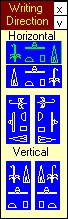
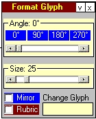
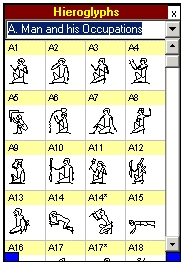
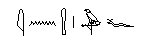
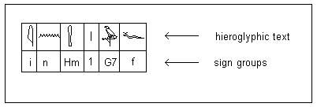
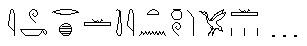
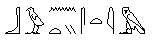
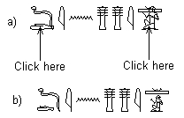
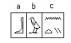
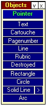

Fig.1.5
1. Quick Start
After reading this chapter you should be able to create simple documents. For more detailed information see chapters 2 - 10.
1.1. Preparing the Graphics User Interface (GUI)
When opening the program for the first time all toolboxes can be seen. There are two buttons at the top right-hand side.

Fig.1.1
A click on the x-button closes the toolbox (use the <Toolbox> menu to reopen toolboxes); the v-button resizes the toolbox. Close the <Line> and <Cartouche> Toolboxes. Now click on the title bar of the <Hieroglyph> toolbox, keep the left mouse button down and drag it into the grey area. At the lower right corner of this toolbox a blue area can be seen. Drag to the right and down to enlarge this toolbox. Position the other toolboxes in the same way. Close the program now (Control-Q). After restarting the program you will see that it appears the same as when you left it.
1.2. Using TipsOnMouseMove
If you move the mouse cursor over a window element two types of tips appear:
- longer texts appear in the <TipsOnMouseMove> toolbox (Menu: Help/Tips)
- short texts appear if the cursor remains on this element for a short time (do not press a mouse button of any kind for this)
The beginner should not close this toolbox, for the texts help by indicating which actions can be performed with this element.
1.3. Writing Hieroglyphs
1.3.1. General Introduction
Writing Direction: By default the program is ready to write hieroglyphic text from left to right. If you want to write in a different direction click on another direction in the toolbox <Writing Direction> (see Fig.1.1). The selected item will appear in a green foreground colour.
Setting the Cursor: Note that, depending on the writing direction, you should set the blinking cursor to the position where the first sign is meant to appear. If you want to write in horizontal direction from right to left, set the cursor next to the right margin. Do this by dragging the cursor with the left or with the right mouse button. The left mouse button is used to move the cursor in accordance with the writing direction, the right mouse button for free movement.
Setting Properties:

Fig.1.2
Before writing a hieroglyphic text the user should set its properties, especially the size. Open the toolbox <Format Glyph> (Menu: Toolboxes/Format Glyph) and set the appropiate font size and other properties. If a hieroglyph is selected, so that a blue handle appears at its lower left corner, these settings refer to that glyph only. If you want to set the properties for all newly written hieroglyphs you must deselect that glyph by clicking on a point in the writing area where no hieroglyph appears. From then on all glyphs are written with these properties until a change takes place.
Writing Hieroglyphs: To write a hieroglyphic text you will normally use groups of signs. A hieroglyphic text is divided into groups (a square or less) which are the writing units. The hieroglyphs can be typed using either their Gardiner sign list designation or with their sign-value, if the latter is available. Both ways of typing can be used alternately, regardless of which mode is displayed in the toolbox, and also without the toolbox being opened. The toolbox <Hieroglyphs> shows both values; the default is the Gardiner sign list designation. To switch between the two possibilities press the blue button at the lower left-hand corner of this toolbox.

Fig.1.3
1.3.2. Horizontal Writing Direction
1.3.2.1. Single Hieroglyphs

Ex.1.1
For writing this text it must be divided into groups:

Fig.1.4
Fig.1.4 is created completely with VisualGlyph, including texts, frames and lines with arrows. Here we are only describing how to write the short hieroglyphic text, which solely consists of single hieroglyphs. In order to write this example set the cursor into <Group> in the foot bar. Type a group and press [Enter]:
i[Enter]Hm[Enter]1[Enter]G7[Enter]f[Enter]
1.3.2.2. The delimiter < / > (one hieroglyph upon the other)
When you write groups using < + > or < / > the blue handle will automatically be attached to the last-typed sign.

Ex.1.2
i[Enter]W/k[Enter]r/x[Enter]Y1[Enter]ti[Enter]i[Enter]t/n[Enter]nw/W[Enter]qmA[Enter]Y1/3[Enter]
Note: The delimiter / has a different usage in the vertical writing direction.
1.3.2.3. The delimiter < + > (side by side)

Ex.1.3
b[Enter]n/t+y[Enter]s[Enter]t[Enter]i[Enter]m[Enter]
The group n/t+y may also be written as n/(t+y).
Note: In the horizontal writing direction the delimiter < + > must be used in conjunction with the < / > delimiter.
1.3.2.4. Sizing and moving hieroglyphs

Ex.1.4
Ex.1.4a is written as: D/d[Enter]i[Enter]n[Enter]Dd[Enter]Dd[Enter]i[Enter]Y1/A1[Enter]
VisualGlyph will not automatically size sign-groups into a square. This must be done by the user. In order to achieve this click on the d-sign (Ex.4a). A handle will appear on the left-hand side of the sign indicating that it has been selected. Note that in this case the two hieroglyphs D and d nearly overlap, so that you might have selected the D-glyph. In this case click on the same point a second time. You will then see that the handle moves slightly. After this action open the toolbox <Format Glyph> (Menu: Toolboxes):
Fig.1.5
The toolbox shows the properties of the selected hieroglyph. Set the scrollbar <Size> to the value 17. Repeat this procedure for the A1-sign. Having done that the hieroglyph will shift slightly to the left. To move a selected sign you can also use the arrow keys, in this case the right arrow. Another possibility is to use the mouse. Position the mouse cursor on the handle so that it changes its form to a vertical arrow. By pressing the left mouse button down you can drag the hieroglyph to any position. The result should look like Ex.1.4b.
1.3.2.5. Horizontal Groups
A horizontal inscription is divided into groups by vertical imaginary lines. The simple rule is that you must divide if you can:

Ex.1.5
This text is divided into three groups a,b,c and is written as b[Enter]w[Enter]n/(t+y) [Enter]. Writing b+w[Enter] creates a mistake because a further subdivision b[Enter]w[Enter] is possible. This is the meaning of the rule: you must divide if you can.
1.3.3. Vertical Writing Direction
To write vertically use the toolbox <writing direction>. Click on the right button of the two vertical writing directions (see Fig.1.1).
1.3.3.1. Example

Ex.1.6: Editing Hieroglyphs
For Ex.6a type: D&md[Enter]i[Enter]n[Enter]gb[Enter]b+A40[Enter]
Click on the i-sign for the handle to appear and move that sign with the vertical arrow to the appropriate position. Do the same with the signs n and gb. The last two signs must be sized. Open the toolbox <Format Glyph> (Fig.1.5) and click on the b-sign. Set the value of the size scollbar to 18 etc.
1.3.3.2. Vertical Groups
A vertical inscription is divided into groups by horizontal imaginary lines. The rule is the same as with horizontal dividing: you must divide if you can.
Note: The group b+A40 above is correct for a vertical writing direction but will produce an error if you write horizontally.
1.4. Other Objects
Objects are created with the help of the toolbox <Objects> (see Fig.165). To create an object click on the object button, e.g. <Text>. This button will change its foreground-colour to green. When the user moves the mouse cursor to the writing area it appears in the form of a cross. You can now press the left mouse button. Keep it down and move the cursor towards the right-hand side and down. You will see a blue dashed rectangle. On releasing the left mouse button the program reacts differently depending on the selected object.

Fig.1.6: The Objects Toolbox
1.4.1. Writing Text
After releasing the mouse button as described above a dialog appears:

Fig.1.7: The Text Dialog
You can type a text directly into the box provided. If a special sign that you cannot find on the keyboard is needed, use the yellow list on the right-hand side. Clicking on a sign transfers it to the cursor position of your text. If you cannot see the sign you are looking for use the scrollbar on the right-hand side of the window or select a different font in the combobox.
To create other objects see chapter 5.